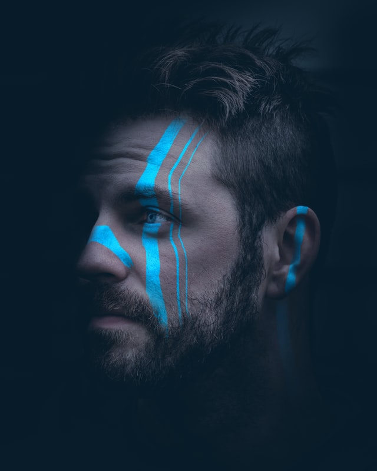

- Father
- Mother
- Brother
- Sister
어머니 소개
2001년 8월 26일에 분당재생병원에서 태어나 2006년 SLP영어 유치원 2008년 성북구에 위치한 서울돈암초등학교 2014년에는 한성대입구역에 삼선중학교를 다녔다. 2017년은 월계역에 위치하는 인덕과학기술고등학교를 재학했고 20살이 되던 해 2월 24일에 입대를 해 병생활을 끝내고도 6개월간의 전문하사 생활을 하였다. 그리고 2022년 3.2 전역을 하였고 4월20일 기준으로 전공을 바꾸어 막연하게 생활코딩으 IT를 공부하기 시작한다.
가족의 구성원으로는 부 김종필 모 채미숙 형 김태우 누 김수지 막내인 김태민까지 포함해 총 5명으로 구성되어있다.
내 장점으로는 세가지가 있다.
좋은 사교성, 예의바른 인성, 사람들을 다뤄본 경험 다양한 관점을 위한 노력등을 대표적으로 말할 수 있다.
